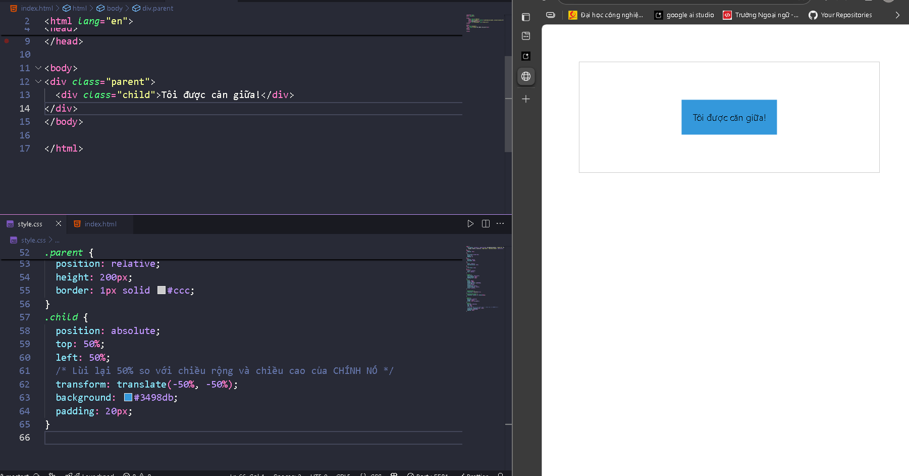
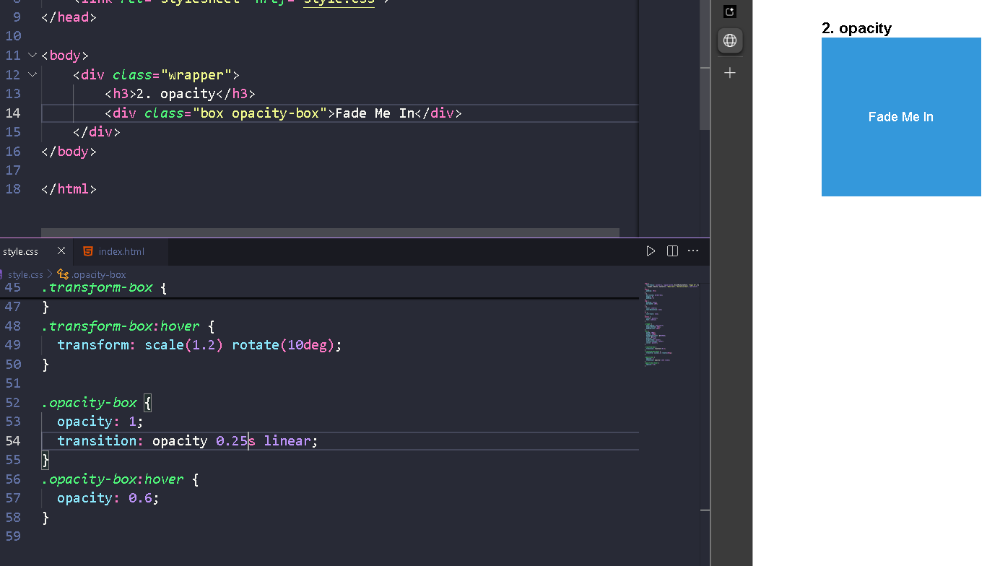

CSS Position là thuộc tính dùng để định vị và kiểm soát cách các phần tử xuất hiện trên trang web. Nó cho phép các phần tử di chuyển linh hoạt hoặc cố định trong giao diện tùy theo nhu cầu thiết kế.
Dưới đây là các giá trị phổ biến của thuộc tính position:
static (Mặc định) top, left, right, bottom.Ví dụ:
<div class="static-box">Box</div>
.static-box {
position: static;
background-color: lightblue;
}
relative top, left, right, bottom, phần tử sẽ di chuyển khỏi vị trí ban đầu mà không làm ảnh hưởng đến các phần tử khác trong bố cục.Ví dụ:
<div class="relative-box">Box</div>
.relative-box {
position: relative;
top: 20px; /* Di chuyển xuống 20px */
left: 30px; /* Di chuyển sang phải 30px */
background-color: lightgreen;
}
absolute position khác static.position, nó sẽ căn cứ vào toàn bộ trang (html).Ví dụ:
<div class="relative-container">
<div class="absolute-box">Box</div>
</div>
.relative-container {
position: relative;
width: 300px;
height: 200px;
background-color: lightgray;
}
.absolute-box {
position: absolute;
top: 10px;
left: 20px;
background-color: lightpink;
padding: 10px;
}
.absolute-box được định vị dựa trên container .relative-container. Nó không chiếm chỗ trong luồng tài liệu.fixed Ví dụ:
<div class="fixed-box">Fixed Box</div>
.fixed-box {
position: fixed;
top: 10px;
right: 10px;
background-color: yellow;
padding: 10px;
}
sticky relative cho đến khi cuộn đến một điểm nhất định, sau đó trở thành fixed.Ví dụ:
<div class="sticky-container">
<div class="sticky-box">Sticky Box</div>
</div>
.sticky-container {
height: 200vh; /* Tăng chiều cao để cuộn */
}
.sticky-box {
position: sticky;
top: 20px; /* Cố định cách mép trên 20px */
background-color: orange;
padding: 10px;
}
relative và absolute Trường hợp thực tế: Một phần tử con có position: absolute nằm trong một phần tử cha có position: relative. Điều này cho phép phần tử con được định vị tự do nhưng vẫn trong phạm vi của phần tử cha.
<div class="relative-container">
<div class="absolute-child">Absolute Child</div>
</div>
.relative-container {
position: relative;
width: 400px;
height: 300px;
background-color: lightblue;
}
.absolute-child {
position: absolute;
top: 50px;
left: 100px;
background-color: lightcoral;
padding: 10px;
}
.absolute-child chỉ được di chuyển trong phạm vi của .relative-container.| Giá trị | Ý nghĩa | Giữ vị trí trong luồng tài liệu | Định vị dựa trên |
|---|---|---|---|
static |
Vị trí mặc định, không thể điều chỉnh. | Có | Luồng tự nhiên. |
relative |
Di chuyển so với vị trí ban đầu của chính nó. | Có | Chính nó. |
absolute |
Di chuyển tự do trong phạm vi phần tử cha gần nhất có position. |
Không | Phần tử cha gần nhất có position. |
fixed |
Cố định trong cửa sổ trình duyệt, không thay đổi khi cuộn trang. | Không | Cửa sổ trình duyệt. |
sticky |
Dính tại một vị trí khi cuộn trang, chỉ trong phạm vi container của nó. | Có | Container hoặc viewport (khi cuộn). |
CSS Animation giúp bạn tạo ra các hiệu ứng chuyển động mượt mà giữa các trạng thái của phần tử trong trang web. Hoạt ảnh trong CSS được áp dụng qua hai phần chính: khai báo @keyframes và sử dụng thuộc tính animation.
@keyframes Để tạo ra một hoạt ảnh, bạn cần khai báo @keyframes, đây là nơi định nghĩa các trạng thái khác nhau của phần tử tại các thời điểm cụ thể trong quá trình chuyển động.
from và to: Được sử dụng để định nghĩa trạng thái ban đầu và trạng thái kết thúc của hoạt ảnh.Ví dụ về @keyframes:
@keyframes moveRight {
from {
transform: translateX(0); /* Bắt đầu tại vị trí gốc */
}
to {
transform: translateX(200px); /* Di chuyển sang phải 200px */
}
}
Ví dụ về sử dụng phần trăm để chia nhỏ quá trình:
@keyframes bounce {
0%,
100% {
transform: translateY(0); /* Ở vị trí gốc */
}
50% {
transform: translateY(-50px); /* Nâng lên 50px tại giữa quá trình */
}
}
animation Sau khi khai báo @keyframes, bạn cần sử dụng thuộc tính animation để áp dụng hoạt ảnh lên phần tử.
animation-name @keyframes.@keyframes.Ví dụ:
animation-name: bounce; /* Áp dụng hoạt ảnh 'bounce' đã khai báo */
animation-duration 2s, 500ms).Ví dụ:
animation-duration: 2s; /* Hoạt ảnh diễn ra trong 2 giây */
animation-timing-function linear, ease, ease-in, ease-out, ease-in-out.Ví dụ:
animation-timing-function: ease-in-out; /* Tốc độ thay đổi mượt mà */
animation-delay 1s, 500ms).Ví dụ:
animation-delay: 1s; /* Hoạt ảnh bắt đầu sau 1 giây */
animation-iteration-count 3) hoặc infinite.Ví dụ:
animation-iteration-count: infinite; /* Hoạt ảnh sẽ lặp lại vô hạn */
animation-direction normal (hoạt ảnh chạy theo chiều mặc định), reverse (hoạt ảnh chạy ngược lại), alternate (hoạt ảnh chạy theo chiều thuận và ngược lại), alternate-reverse.Ví dụ:
animation-direction: alternate; /* Hoạt ảnh chạy theo chiều thuận rồi ngược lại */
animation Sau khi hiểu các thuộc tính cơ bản, bạn có thể sử dụng cú pháp shorthand để áp dụng tất cả các thuộc tính này trong một dòng mã duy nhất.
Cú pháp shorthand:
animation: [animation-name] [animation-duration] [animation-timing-function]
[animation-delay] [animation-iteration-count] [animation-direction];
Ví dụ:
/* Ứng dụng toàn bộ thuộc tính animation vào phần tử */
.animation-box {
animation: bounce 2s ease-in-out 1s infinite alternate;
}
HTML:
<div class="box"></div>
CSS:
@keyframes moveRight {
from {
transform: translateX(0);
}
to {
transform: translateX(200px);
}
}
.box {
width: 100px;
height: 100px;
background-color: lightblue;
animation: moveRight 2s ease-in-out infinite;
}
Giải thích:
@keyframes moveRight: Khai báo hoạt ảnh di chuyển sang phải.animation: moveRight 2s ease-in-out infinite: Áp dụng hoạt ảnh với thời gian 2 giây, chuyển động mượt mà, lặp vô hạn.CSS Transition giúp tạo ra các hiệu ứng chuyển đổi mượt mà giữa hai trạng thái của phần tử. Các thuộc tính của Transition giúp bạn tạo hiệu ứng mượt mà khi người dùng thay đổi trạng thái của phần tử (ví dụ: hover, focus, active).
transition transition-property background-color, width, transform).Ví dụ:
transition-property: background-color; /* Tạo hiệu ứng chuyển đổi cho background-color */
transition-duration 0.5s, 300ms).Ví dụ:
transition-duration: 0.3s; /* Chuyển đổi trong 0.3 giây */
transition-timing-function ease, linear, ease-in, ease-out, ease-in-out.Ví dụ:
transition-timing-function: ease-in-out; /* Chuyển đổi mượt mà */
transition-delay 0.5s, 1s).Ví dụ:
transition-delay: 0.2s; /* Chuyển đổi bắt đầu sau 0.2 giây */
transition Sau khi hiểu các thuộc tính cơ bản của transition, bạn có thể sử dụng cú pháp shorthand để áp dụng tất cả các thuộc tính này trong một dòng mã duy nhất.
Cú pháp shorthand:
transition: [transition-property] [transition-duration]
[transition-timing-function] [transition-delay];
Ví dụ:
/* Ứng dụng toàn bộ thuộc tính transition vào phần tử */
.transition-box {
transition: background-color 0.3s ease-in-out 0.2s;
}
HTML:
<div class="transition-box">Hover Me</div>
CSS:
.transition-box {
width: 200px;
height: 200px;
background-color: lightblue;
transition: background-color 0.5s ease;
}
.transition-box:hover {
background-color: lightgreen;
}
Giải thích:
transition: background-color 0.5s ease: Tạo hiệu ứng chuyển đổi màu nền trong 0.5 giây..transition-box, màu nền sẽ thay đổi từ lightblue sang lightgreen một cách mượt mà.translate() : Di chuyển một thẻ
<div class="parent">
<div class="child">I'm centered!</div>
</div>
.parent {
position: relative;
height: 200px;
border: 1px solid #ccc;
}
.child {
position: absolute;
top: 50%;
left: 50%;
/* Lùi lại 50% so với chiều rộng và chiều cao của CHÍNH NÓ */
transform: translate(-50%, -50%);
background: #3498db;
padding: 20px;
}

scale() — Co giãn (Phóng to/Thu nhỏ) một thẻ
<button class="scale-button">Phóng to!</button>
.scale-button {
transition: transform 0.2s ease-out;
}
.scale-button:hover {
transform: scale(1.1); /* Lớn hơn 10% */
}
Color, background-color, border-color, border-radius,..
Opacity: giá trị từ 0 -> 1
Một số thuộc tính khác như box-shadow, filter mọi người có thể tìm hiểu nếu muốn biết thêm nha

| Đặc điểm | CSS Transition | CSS Animation |
|---|---|---|
| Kích hoạt | Khi trạng thái của phần tử thay đổi (chẳng hạn như khi hover). | Tự động chạy hoặc có thể kích hoạt bằng cách thay đổi lớp hoặc sự kiện. |
| Độ phức tạp | Hiệu ứng đơn giản, chuyển đổi giữa hai trạng thái. | Có thể tạo ra các hiệu ứng phức tạp, với nhiều bước chuyển động. |
| Lặp lại | Không lặp lại trừ khi trạng thái thay đổi liên tục. | Có thể lặp lại vô hạn, hoặc lặp lại một số lần nhất định. |
| Thời gian bắt đầu | Chỉ có thể bắt đầu khi có thay đổi trạng thái. | Có thể bắt đầu ngay lập tức hoặc sau một khoảng thời gian trì hoãn (delay). |
| Sử dụng | Thích hợp cho các hiệu ứng chuyển đổi đơn giản như hover, focus. | Thích hợp cho các hoạt ảnh phức tạp, nhiều bước thay đổi như di chuyển, thay đổi màu sắc liên tục. |
| Điều khiển tốc độ | Dễ dàng điều khiển với các thuộc tính như transition-timing-function. |
Cung cấp nhiều tùy chọn kiểm soát chuyển động như keyframes, animation-timing-function. |
| Sự kiện | Không thể tự kích hoạt hay có nhiều trạng thái. | Có thể tạo nhiều trạng thái và chuyển động, chẳng hạn như di chuyển, thay đổi màu sắc, xoay vòng. |
| Khả năng tái sử dụng | Ít linh hoạt hơn khi muốn thay đổi nhiều trạng thái. | Rất linh hoạt trong việc thay đổi nhiều trạng thái và tạo hiệu ứng phức tạp. |